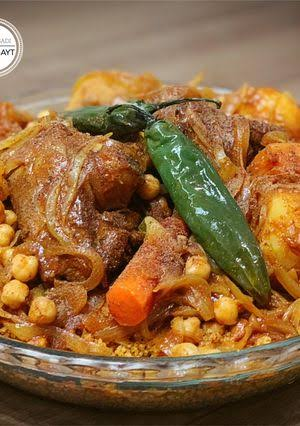

Couscous
Home page

Description
Libyan couscous is a comforting dish featuring fine semolina grains steamed over a slow-simmered
stew of lamb or
chicken, chickpeas, and a vibrant blend of warming spices like paprika and cumin. Root vegetables like
pumpkin,
potatoes, and carrots are added later to absorb the rich, spiced tomato broth.
Ingredients
- Couscous
- Meat
- Chickpeas
- Tomatoes paste
- Aromatics
- Warming Spices
- Root Vegetables
How to make it
- Sauté onions and meat.
- Add spices and tomatoes.
- Simmer with water and chickpeas.
- Prep couscous with oil and water.
- Steam couscous over the stew.
- Add root vegetables to stew.
- Fluff steamed couscous with broth.
- Layer couscous on a platter.